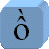

| Authors | Ken Whistler (ken@unicode.org), Mark Davis (mark.davis@us.ibm.com), Asmus Freytag (asmus@unicode.org) |
| Date | 2004-09-09 |
| This Version | http://www.unicode.org/reports/tr17/tr17-5.html |
| Previous Version | http://www.unicode.org/reports/tr17/tr17-3.3.html |
| Latest Version | http://www.unicode.org/reports/tr17/ |
| Revision | 5 |
This document clarifies a number of the terms used to describe character encodings, and where the different forms of Unicode fit in. It elaborates the Internet Architecture Board (IAB) three-layer “text stream” definitions into a four-layer structure.
This document has been reviewed by Unicode members and other interested parties, and has been approved by the Unicode Technical Committee as a Unicode Technical Report. This is a stable document and may be used as reference material or cited as a normative reference by other specifications.
A Unicode Technical Report (UTR) contains informative material. Conformance to the Unicode Standard does not imply conformance to any UTR. Other specifications, however, are free to make normative references to a UTR.
Please submit corrigenda and other comments with the online reporting form [Feedback]. Related information that is useful in understanding this document is found in the References. For the latest version of the Unicode Standard see [Unicode]. For a list of current Unicode Technical Reports see [Reports]. For more information about versions of the Unicode Standard, see [Versions].
This report describes a model for the structure of character encodings. The Unicode Character Encoding Model places the Unicode Standard in the context of other character encodings of all types, as well as existing models such as the character architecture promoted by the Internet Architecture Board (IAB) for use on the internet, or the Character Data Representation Architecture [CDRA] defined by IBM for organizing and cataloging its own vendor-specific array of character encodings. This document focuses on how these models should be extended and clarified to cover all the aspects of the Unicode Standard and ISO/IEC 10646 [10646]. (For a list of common acronyms used in this text, see Section 9 Definitions and Acronyms).
The four levels of the Unicode Character Encoding Model can be summarized as:
In addition to the four individual levels, there are two other useful concepts:
The IAB model, as defined in [RFC 2130], distinguishes three levels: Coded Character Set (CCS), Character Encoding Scheme (CES), and Transfer Encoding Syntax (TES). However, four levels need to be defined to adequately cover the distinctions required for the Unicode character encoding model. One of these, the Abstract Character Repertoire, is implicit in the IAB model. The Unicode model also gives the TES a separate status outside the model, while adding an additional level between the CCS and the CES.
The following sections give sample definitions, explanations and examples for each of the four levels, as well as the Character Map, and the Transfer Encoding Syntax. These are followed by a discussion of API Binding issues and a complete list of acronyms used in this document.
A character repertoire is defined as an unordered set of abstract characters to be encoded. The word abstract means that these objects are defined by convention. In many cases a repertoire consists of a familiar alphabet or symbol set.
Repertoires come in two types: fixed and open. For most character encodings, the repertoire is fixed, and often small. Once the repertoire is decided upon, it is never changed. Addition of a new abstract character to a given repertoire creates a new repertoire, which then will be given its own catalogue number, constituting a new object. For the Unicode Standard, on the other hand, the repertoire is inherently open. Because Unicode is intended to be the universal encoding, any abstract character that ever could be encoded is potentially a member of the set to be encoded, whether that character is currently known or not.
Some other character sets use a limited notion of open repertoires. For example, Microsoft has on occasion extended the repertoire of its Windows character sets by adding a handful of characters to an existing repertoire. This occurred when the EURO SIGN was added to the repertoire for a number of Windows character sets, for example. For suggestions on how to map the unassigned characters of open repertoires, see [CharMapML].
Repertoires are the entities that get CS (“character set” ) values in the IBM CDRA architecture.
Examples of Character Repertoires:
The Unicode Standard versions its repertoire by publication of major and minor editions of the standard: 1.0, 1.1, 2.0, 2.1, 3.0,... The repertoire for each version is defined by the enumeration of abstract characters included in that version.
Repertoire extensions for the Unicode Standard are now strictly additive, even though there were several discontinuities to the earliest versions (1.0 and 1.1) and affecting backwards compatibility to them. The primary reason for these was the merger of the [Unicode] with [10646]. Starting with version 2.0 and continuing forward indefinitely into future versions, once included, no character is ever removed from the repertoire, as specified in the Unicode Stability Policy [Stability].
The versioning of the repertoire is different from the versioning of the Unicode Standard as a whole, in particular the Unicode Character Database [UCD], which defines Character Properties (see also [PropModel]). There are update versions of the text of the Unicode standard and of the Unicode Character Database between major and minor versions of the Unicode Standard. While these update versions may amend character properties and descriptions of character behavior, they do not add to the character repertoire. For more information about versions of the Unicode Standard see Versions of the Unicode Standard [Versions].
ISO/IEC 10646 has a different mechanism for extending its repertoire. The 10646 repertoire is extended by a formal amendment process. As each individual amendment containing additional characters is published, it extends the 10646 repertoire. The repertoires of the Unicode Standard and ISO/IEC 10646 are kept in alignment by coordinating the publication of major versions of the Unicode Standard with the publication of a well-defined list of amendments for 10646 or with a major revision and republication of 10646.
The elements of the character repertoire are abstract characters. Characters are different from glyphs, which are the particular images representing a character or part of a character. Glyphs for the same character may have very different shapes: as shown in the following examples for the letter a.
| Character | Sample Glyphs | |||||
|---|---|---|---|---|---|---|
|
|
||||||
Glyphs do not correspond one-for-one with characters. For example, a sequence of “f” followed by “i” may be represented with a single glyph, called an fi ligature. Notice that the shapes are merged together, and the dot is missing from the “i” in the following example:
| Character Sequence | Sample Glyph |
|---|---|
|
|
On the other hand, the same image as the fi ligature could conceivably also be achieved by a sequence of two glyphs with the right shapes, as in the hypothetical example shown in Figure 3. The choice of whether to use a single glyph or a sequence of two is up to the font containing the glyphs and the rendering software.
| Character Sequence | Possible Glyph Sequence |
|---|---|
|
|
Similarly, an accented character could be represented by a single glyph, or by separate component glyphs positioned appropriately. In addition, any of the accents can also be considered characters in their own right, in which case a sequence of characters can also correspond to different possible glyph representations:
| Character Sequence | Possible Glyph Sequences | ||
|---|---|---|---|
|  |
|
|
|
|
|
|
|
|
In non-Latin scripts, the connection between glyphs and characters is at times even less direct. Glyphs may be required to change their shape, position and width depending on the surrounding glyphs. Such glyphs are called contextual forms. For example, the Arabic character heh has the four contextual glyphs shown in figure 5.
| Character | Possible Glyphs, depending on context | |||
|---|---|---|---|---|
|
|
|
|
||
In Arabic and other scripts, justification of text inside fixed margins is not done by expanding the spaces. Instead, certain glyphs are stretched by elongating their horizontal parts. Ideally this is implemented by changing the shape of the glyph depending on the desired width. On some systems, this stretching is approximated by inserting extra connecting glyphs called kashidas, as shown in Figure 6. In such a case, a single character may conceivably correspond to a whole sequence of kashidas + glyphs + kashidas.
| Character | Sequence of glyphs |
|---|---|
|
|
In other cases, a single character must correspond to two glyphs, because those two glyphs are positioned around other letters. See the Tamil characters in Figure 7 below. If one of those glyphs forms a ligature with other characters, then there is a situation where what is conceptual part of a character corresponds to visual part of a glyph. If a character (or any part of it) corresponds to a glyph (or any part of it), then one says that the character contributes to the glyph.
| Character | Split Glyphs |
|---|---|
|
|
|
For the general case, the correspondence between glyphs and characters is not one-to-one, and cannot be predicted from the text alone. Whether a particular string of characters is rendered by a particular sequence of glyphs will depend on the sophistication of the host operating system and the font. The ordering of glyphs also does not necessarily correspond to the ordering of the characters. In particular the right-to-left scripts like Arabic and Hebrew give rise to complex reordering. See UAX #9: The Bidirectional Algorithm [Bidi].
For historical reasons, abstract character repertoires may include many entities that normally would not be considered appropriate members of an abstract character repertoire. These so-called compatibility characters may include ligature glyphs, contextual form glyphs, glyphs that vary by width, sequences of characters, and adorned glyphs, such as circled numbers. Figure 8 lists some examples in which these are encoded as single characters in Unicode. As with glyphs, there are not necessarily one-to-one relationships between characters and code points.
What an end-user thinks of as a single character (also called a grapheme in the context of Unicode) may in fact be represented by multiple code points; conversely, a single code point may correspond to multiple characters. Here are some examples:
| Characters | Code Points | Notes | |||
|---|---|---|---|---|---|
|
|
|
|
Arabic contextual form glyphs encoded as compatibility characters in Unicode, also known as presentation forms. | ||
| Ligature glyph encoded as compatibility character in Unicode and several character sets | |||||
| A single code point representing a sequence of three characters. (Encoded as compatibility character in Unicode and several character sets). | |||||
|
|
|
The Devanagari syllable ksha represented by three code points. | |||
| G-ring represented by two code points. | |||||
For more information on graphemes see UAX# 29: Text Boundaries [Boundaries].
Unlike most character repertoires, the synchronized repertoire of Unicode and 10646 is intended to be universal in coverage. Given the complexity of many writing systems, in practice this implies that nearly all implementations will fully support only some subset of the total repertoire, rather than all the characters.
Formal subset mechanisms are occasionally seen in implementations of some Asian character sets, where for example, the distinction between “Level 1 JIS” and “Level 2 JIS” support refers to particular parts of the repertoire of the JIS X 0208 kanji characters to be included in the implementation.
Subsetting is a major formal aspect of ISO/IEC 10646. The standard includes a set of internal catalog numbers for named subsets, and further makes a distinction between subsets that are fixed collections and those that are open collections, defined by a range of code positions. Open collections are extended any time an addition to the repertoire gets encoded in a code position between the range limits defining the collection. When the last of its open code positions is filled, an open collection automatically becomes a fixed collection.
The European Committee for Standardization (CEN) has defined several multilingual European subsets of ISO/IEC 10646-1 (called MES-1, MES-2, MES-3A, and MES-3B). MES-1 and MES-2 have been added as named fixed collections in 10646.
The Unicode Standard specifies neither predefined subsets nor a formal syntax for their definition. It is left to each implementation to define and support the subset of the universal repertoire that it wishes to interpret.
A coded character set is defined to be a mapping from a set of abstract characters to the set of nonnegative integers. This range of integers need not be contiguous. In the Unicode Standard, the concept of the Unicode scalar value (cf. definition D28, in Chapter 3, "Conformance" of [Unicode]) explicitly defines such a noncontiguous range of integers.
An abstract character is defined to be in a coded character set if the coded character set maps from it to an integer. That integer is the code point to which the abstract character has been assigned. That abstract character is then an encoded character.
Coded character sets are the basic object that both ISO and vendor character encoding committees produce. They relate a defined repertoire to nonnegative integers, which then can be used unambiguously to refer to particular abstract characters from the repertoire.
A coded character set may also be known as a character encoding, a coded character repertoire, a character set definition, or a code page.
In the IBM CDRA architecture, CP (“code page” ) values refer to coded character sets. Note that this use of the term code page is quite precise and limited. It should not be — but generally is — confused with the generic use of code page to refer to character encoding schemes.
Examples of Coded Character Sets:
| Name | Repertoire |
|---|---|
| JIS X 0208 | assigns pairs of integers known as kuten points |
| ISO/IEC 8859-1 | ASCII plus Latin-1 |
| ISO/IEC 8859-2 | different repertoire than 8859-1, although both use the same code space |
| Code Page 037 | same repertoire as 8859-1; different integers assigned to the same characters |
| Code Page 500 | same repertoire as 8859-1 and Code Page 037; different integers |
| The Unicode Standard, Version 2.0 | exactly the same repertoire and mapping |
| ISO/IEC 10646-1:1993 plus amendments 1-7 |
|
| The Unicode Standard, Version 3.0 | exactly the same repertoire and mapping |
| ISO/IEC 10646-1:2000 | |
| The Unicode Standard, Version 4.0 | exactly the same repertoire and mapping |
| ISO/IEC 10646:2003 |
This document does not attempt to list all versions of the Unicode Standard. See Versions of the Unicode Standard [Versions] for the complete list of versions and for information how they match with particular versions and amendments of 10646.
SC2, the JTC1 subcommittee responsible for character coding, requires the assignment of a unique character name for each abstract character in the repertoire of its coded character sets. This practice is not generally followed in vendor coded character sets or in the encodings produced by standards committees outside SC2, in which any names provided for characters, are often variable and annotative, rather than normative parts of the character encoding.
The main rationale for the SC2 practice of character naming was to provide a mechanism to unambiguously identify abstract characters across different repertoires given different mappings to integers in different coded character sets. Thus LATIN SMALL LETTER A WITH GRAVE would be the same abstract character, even though it occurred in different repertoires and was assigned different integers in different coded character set.
The IBM CDRA [CDRA], on the other hand, ensures character identity across different coded character sets (or code pages ) by assigning a catalogue number known as a GCGID (graphic character glyphic identifier), to every abstract character used in any of the repertoires accounted for by the CDRA. Abstract characters that have the same GCGID in two different coded character sets are by definition the same character. Other vendors have made use of similar internal identifier systems for abstract characters.
The advent of Unicode/10646 has largely rendered such schemes obsolete. The identity of abstract characters in all other coded character sets is increasingly being defined by reference to Unicode/10646 itself. Part of the pressure to include every “character” from every existing coded character set into the Unicode Standard results from the desire by many to get rid of subsidiary mechanisms for tracking bits and pieces, odds and ends that are not part of Unicode, and instead just use the Unicode Standard as the universal catalog of characters.
The range of nonnegative integers used for the mapping of abstract characters defines a related concept of code space. Traditional boundaries for types of code spaces are closely tied to the encoding forms (see below), because the mappings of abstract characters to nonnegative integers are done with particular encoding forms in mind. Examples of significant code spaces are 0..7F, 0..FF, 0..FFFF, 0..10FFFF, 0..7FFFFFFF, 0..FFFFFFFF.
Code spaces can also have fairly elaborate structures, depending on whether the range of integers is conceived of as contiguous, or whether particular ranges of values are disallowed. Most complications result from considerations of encoding form. When an encoding form specifies that the integers that are being encoded are to be serialized as sequences of bytes, there are often constraints placed on the particular values that those bytes may have. Most commonly such constraints disallow byte values corresponding to control functions. In terms of code space, such constraints on byte values result in multiple non-contiguous ranges of integers that are disallowed for mapping a character repertoire. (See [Lunde] for two-dimensional diagrams of typical code spaces for Asian coded character sets implementing such constraints.)
Note: In ISO standards the term octet is used for an 8-bit byte. In this document, the term byte is used consistently for an 8-bit byte only.
A character encoding form is a mapping from the set of integers used in a CCS to the set of sequences of code units. A code unit is an integer occupying a specified binary width in a computer architecture, such as an 8-bit byte. The encoding form enables character representation as actual data in a computer. The sequences of code units do not necessarily have the same length.
A character encoding form for a coded character set is defined to be a character encoding form that maps all of the encoded characters for that coded character set.
Note: In many cases, there is only one character encoding form for a given coded character set. In some such cases only the character encoding form has been specified. This leaves the coded character set implicitly defined, based on an implicit relation between the code unit sequences and integers.
When interpreting a sequence of code units, there are three possibilities:
The encoding form for a CCS may result in either fixed-width or variable-width sequences of code units associated with abstract characters. The encoding form may involve an arbitrary reversible mapping of the integers of the CCS to a set of code unit sequences.
Encoding forms come in various types. Some of them are exclusive to the Unicode/10646, whereas others represent general patterns that are repeated over and over for hundreds of coded character sets. Some of the more important examples of encoding forms follow.
Examples of fixed-width encoding forms:
| Type | Each character encoded as |
Notes |
|---|---|---|
| 7-bit | a single 7-bit quantity | example: ISO 646 |
| 8-bit G0/G1 | a single 8-bit quantity | with constraints on use of C0 and C1 spaces |
| 8-bit | a single 8-bit quantity | with no constraints on use of C1 space |
| 8-bit EBCDIC | a single 8-bit quantity | with the EBCDIC conventions rather than ASCII conventions |
| 16-bit (UCS-2) | a single 16-bit quantity | within a code space of 0..FFFF |
| 32-bit (UCS-4) | a single 32-bit quantity | within a code space 0..7FFFFFFF |
| 32-bit (UTF-32) | a single 32-bit quantity | within a code space of 0..10FFFF |
| 16-bit DBCS process code | a single 16-bit quantity | example: UNIX widechar implementations of Asian CCS's |
| 32-bit DBCS process code | a single 32-bit quantity | example: UNIX widechar implementations of Asian CCS's |
| DBCS Host | two 8-bit quantities | following IBM host conventions |
Examples of variable-width encoding forms:
| Name | Characters are encoded as | Notes |
|---|---|---|
| UTF-8 | a mix of one to four 8-bit code units
in Unicode and one to six code units in 10646 |
used only with Unicode/10646 |
| UTF-16 | a mix of one to two 16 bit code units | used only with Unicode/10646 |
The encoding form defines one of the fundamental aspects of an encoding: how many code units are there for each character. The number of code units per character is important to internationalized software. Formerly this was equivalent to how many bytes each character was represented by. With the introduction by Unicode and 10646 of wider code units for UCS-2, UTF-16, UCS-4, and UTF-32, this is generalized to two pieces of information: a specification of the width of the code unit, and the number of code units used to represent each character. The UCS-2 encoding form, which is associated with ISO/IEC 10646 and can only express characters in the BMP, is a fixed-width encoding form. In contrast, UTF-16 uses either one or two code units and is able to cover the entire code space of Unicode.
UTF-8 provides a good example. In UTF-8, the fundamental code unit used for representing character data is 8 bits wide (that is, a byte or octet). The width map for UTF-8 is:
0x00..0x7F → 1 byte 0x80..0x7FF → 2 bytes 0x800..0xD7FF, 0xE000..0xFFFF → 3 bytes 0x10000 .. 0x10FFFF → 4 bytes
Examples of encoding forms as applied to particular coded character sets:
| Name | Encoding forms |
|---|---|
| JIS X 0208 | generally transformed from the kuten notation to a 16-bit “JIS code” encoding form, for example "nichi", 38 92 (kuten) → 0x467C JIS code |
| ISO 8859-1 | has the 8-bit G0/G1 encoding form |
| CP 037 | 8-bit EBCDIC encoding form |
| CP 500 | 8-bit EBCDIC encoding form |
| US ASCII | 7-bit encoding form |
| ISO 646 | 7-bit encoding form |
| Windows CP 1252 | 8-bit encoding form |
| Unicode 4.0 | UTF-16 (default), UTF-8, or UTF-32 encoding form |
| Unicode 3.0 | either UTF-16 (default) or UTF-8 encoding form |
| Unicode 1.1 | either UCS-2 (default) or UTF-8 encoding form |
| ISO/IEC 10646, | depending on the declared implementation levels, may have UCS-2, UCS-4, UTF-16, or UTF-8. |
A character encoding scheme (CES) is a reversible transformation of sequences of code units to sequences of bytes in one of three ways:
a. A simple CES uses a mapping of each code unit of a CEF into a unique serialized byte sequence in order.
b. A compound CES uses two or more simple CESs, plus a mechanism to shift between them. This mechanism includes bytes (for example single shifts, SI/SO, or escape sequences) that are not part of any of the simple CESs, but which are defined by the character encoding architecture and which may require an external registry of particular values (such as for the ISO 2022 escape sequences).
The nature of a compound CES means there may be different sequences of bytes corresponding to the same sequence of code units. While these sequences are not unique, the original sequence of code units can be recovered unambiguously from any of these.
c. A compressing CES maps a code unit sequence to a byte sequence while minimizing the length of the byte sequence. Some compressing CESs are designed to produce a unique sequence of bytes for each sequence of code units, so that the compressed byte sequences can be compared for equality or ordered by binary comparison. Other compressing CESs are merely reversible.
Character encoding schemes are relevant to the issue of cross-platform persistent data involving code units wider than a byte, where byte-swapping may be required to put data into the byte polarity canonical for a particular platform. In particular:
It is important not to confuse a Character Encoding Form (CEF) and a CES.
Note that some of the Unicode encoding schemes have the same labels as the three Unicode encoding forms. When used unqualified, the terms UTF-8, UTF-16, and UTF-32 are ambiguous between their sense as Unicode encoding forms and as Unicode encoding schemes. For UTF-8, this ambiguity is usually innocuous, because the UTF-8 encoding scheme is trivially derived from the byte sequences defined for the UTF-8 encoding form. However, for UTF-16 and UTF-32, the ambiguity is more problematical. As encoding forms, UTF-16 and UTF-32 refer to code units as they are accessed from memory via 16-bit or 32-bit data types; there is no associated byte orientation, and a BOM is never used. (Viewing memory in a debugger or casting wider data types to byte arrays is a byte serialization).
As encoding schemes, UTF-16 and UTF-32 refer to serialized bytes, for example the serialized bytes for streaming data or in files; they may have either byte orientation, and a single BOM may be present at the start of the data. When the usage of the abbreviated designators UTF-16 or UTF-32 might be misinterpreted, and where a distinction between their use as referring to Unicode encoding forms or to Unicode encoding schemes is important, the full terms should be used. For example, use UTF-16 encoding form or UTF-16 encoding scheme. They may also be abbreviated to UTF-16 CEF or UTF-16 CES, respectively.
Examples of Unicode Character Encoding Schemes:
UTF-16 and UTF-32 are compound CESs, consisting of an single, optional byte order mark at the start of the data followed by a simple CES.
| Name | CEF | CES |
|---|---|---|
| UTF-8 | + | simple |
| UTF-16 | + | compound |
| UTF-16BE | simple | |
| UTF-16LE | simple | |
| UTF-32 | + | compound |
| UTF-32BE | simple | |
| UTF-32LE | simple |
Examples of Non-Unicode Character Encoding Schemes:
Examples of compressing Character Encoding Schemes:
Processor architectures differ in the way that multi-byte machine integers are mapped to storage locations. Little Endian architectures put the least significant byte at the lower address, while Big Endian architectures start with the most significant byte.
This difference does not matter for operations on code units in memory, but the byte order becomes important when code units are serialized to sequences of bytes using a particular CES. In terms of reading a data stream, there are two types of byte order: Same as or Opposite of the byte order of the processor reading the data. In the former case, no special operation needs to be taken; in the latter case, the data needs to be byte reversed before processing.
In terms of external designation of data streams, three types of byte orders can be distinguished: Big Endian (BE), Little Endian (LE) and default or internally marked.
In Unicode, the character at code point U+FEFF is defined as the byte order mark, while its byte-reversed counterpart, U+FFFE is a noncharacter (U+FFFE) in UTF-16 , or outside the code space (0xFFFE0000) for UTF-32. At the head of a data stream, the presence of a byte order mark can therefore be used to unambiguously signal the byte order of the code units.
The mapping from a sequence of members of an abstract character repertoire to a serialized sequence of bytes is called a Character Map (CM). A simple character map thus implicitly includes a CCS, a CEF, and a CES, mapping from abstract characters to code units to bytes. A compound character map includes a compound CES, and thus includes more than one CCS and CEF. In that case, the abstract character repertoire for the character map is the union of the repertoires covered by the coded character sets involved.
Unicode Technical Report #22: Character Mapping Markup Language [CharMapML] defines an XML specification for representing the details of Character Maps. The text also contains a detailed discussion of issues in mapping between character sets.
Character Maps are the entities that get IANA charset [charset] identifiers in the IAB architecture. From the IANA charset point of view it is important that a sequence of encoded characters be unambiguously mapped onto a sequence of bytes by the charset. The charset must be specified in all instances, as in Internet protocols, where textual content is treated as an ordered sequence of bytes, and where the textual content must be reconstructible from that sequence of bytes.
In the IBM CDRA architecture, Character Maps are the entities that get CCSID (coded character set identifier) values. A character map may also be known as a charset, a character set, a code page (broadly construed), or a CHARMAP.
In many cases, the same name is used for both a character map and for a character encoding scheme, such as UTF-16BE. Typically this is done for simple character mappings when such usage is clear from context.
A transfer encoding syntax is a reversible transform of encoded data which may (or may not) include textual data represented in one or more character encoding schemes.
Typically TESs are engineered to transform one byte stream into another, while avoiding particular byte values that would confuse one or more Internet or other transmission/storage protocols. Examples include base64, uuencode, BinHex, and quoted-printable. While data transfer protocols often incorporate data compressions to minimize the number of bits to be passed down a communication channel, compression is usually handled outside the TES, for example by protocols such as pkzip, gzip, or winzip.
The Internet Content-Transfer-Encoding tags “7bit” and “8bit” are special cases. These are data width specifications relevant basically to mail protocols and which appear to predate true TESs like quoted-printable. Encountering a “7bit” tag does not imply any actual transform of data; it merely indicates that the charset of the data can be represented in 7 bits, and will pass 7-bit channels — it really indicates the encoding form. In contrast, quoted-printable actually converts various characters (including some ASCII) to forms like “=2D” or “=20”, and should be reversed on receipt to regenerate legible text in the designated character encoding scheme.
Programming languages define specific data types for character data, using bytes or multi-byte code units. For example, the char data type in Java or C# always uses 16-bit code units, while the size of the char and wchar_t data types in C and C++ are, within quite flexible constraints, implementation defined. In Java or C#, the 16-bit code units are by definition UTF-16 code units, while in C and C++, the binding to a specific character set is again up to the implementation. In Java, strings are an opaque data type, while in C (and at the lowest level also in C++) they are represented as simple arrays of char or wchar_t.
The Java model supports portable programs, but external data in other encoding forms must first be converted to UTF-16. The C/C++ model is intended to support a byte serialized character set using the char data type, while supporting a character set with a single code unit per character with the wchar_t data type. These two character sets do not have to be the same, but the repertoire of the larger set must include the smaller set to allow mapping from one data type into the other. This allows implementations to support UTF-8 as the char data type and UTF-32 as the wchar_t data type, for example. In such use, the char data type corresponds to data that is serialized for storage and interchange, and the wchar_t data type is used for internal processing. There is no guarantee that wchar_t represent characters of a specific character set. However, a standard macro, __STDC_ISO_10646__ can be used by an environment to designate that it supports a specific version of 10646, indicated by year and month.
However, the definition of the term character in the ISO C and C++ standard does not necessarily match the definition of abstract character in this model. Many widely used libraries and operating systems define wchar_t to be UTF-16 code units. Other APIs supporting UTF-16 are often simply defined in terms of arrays of 16-bit unsigned integers, but this makes certain features of the programming language unavailable, such as string literals.
ISO/IEC TR 19769 extends the model used in ISO C and C++ by recommending the use of two typedefs and a minimal extension to the support for character literals and runtime library. The data types char16_t and char32_t are unsigned integers designed to hold one code unit for UTF-16 or UTF-32 respectively. Like wchar_t they can be used generically for any character set, but a predefined macros __STDC_UTF_16__ and __STDC_UTF_32__ can be used to indicate that the data type char16_t or char32_t holds code units that are in the respective Unicode encoding form.
When character data types are passed as arguments in APIs, the byte order of the platform is generally not relevant for code units. The same API can be compiled on platforms with any byte polarity, and will simply expect character data (as for any integral-based data) to be passed to the API in the byte polarity for that platform. However, the size of the data type must correspond to the size of the code unit, or the results can be unpredictable, as when a byte oriented strcpy is used on UTF-16 data which may contain embedded NUL bytes.
While there are many API functions that by design do not need to care about which character set the code units correspond to (strlen or strcpy for example), many other operations require information about the character and its properties. As a result portable programs may not be able to use the char or wchar_t data types in C/C++.
A string data type is simply a sequence of code units. Thus a Unicode 8-bit string is a sequence of 8-bit Unicode code units; a Unicode 16-bit string is a sequence of 16-bit code units; a Unicode 32-bit string is a sequence of 32-bit code units.
Depending on the programming environment, a Unicode string may or may not also be required to be in the corresponding Unicode encoding form. For example, strings in Java, C#, or ECMAScript are Unicode 16-bit strings, but are not necessarily well-formed UTF-16 sequences. In normal processing, there are many times where a string may be in a transient state that is not well-formed UTF-16. Because strings are such a fundamental component of every program, it can be far more efficient to postpone checking for well formedness.
However, whenever strings are specified to be in a particular Unicode encoding for—even one with the same code unit size—the string must not violate the requirements of that encoding form. For example, isolated surrogates in a Unicode 16-bit string are not allowed when that string is specified to be well-formed UTF-16.
This section briefly defines some of the common acronyms related to character encoding and used in this text. More extensive definitions for some of these terms can be found elsewhere in this document.
| ACR | Abstract Character Repertoire |
| API | Application Programming Interface |
| ASCII | American Standard Code for Information Interchange |
| BE | Big-endian (most significant byte first) |
| BMP | Basic Multilingual Plane, the first 65,536 characters of 10646 |
| BOCU | Byte Ordered Compression for Unicode |
| CCS | Coded Character Set |
| CCSID | Code Character Set Identifier |
| CDRA | Character Data Representation Architecture from IBM |
| CEF | Character Encoding Form |
| CEN | European Committee for Standardization |
| CES | Character Encoding Scheme |
| CM | Character Map |
| CP | Code Page |
| CS | Character Set |
| DBCS | Double-Byte Character Set |
| ECMA | European Computer Manufacturers Association |
| EBCDIC | Extended Binary Coded Decimal Interchange Code |
| EUC | Extended Unix Code |
| GCGID | Graphic Character Set Glyphic Identifier |
| IAB | Internet Architecture Board |
| IANA | Internet Assigned Numbers Authority |
| IEC | International Electrotechnical Commission |
| IETF | Internet Engineering Taskforce |
| ISO | International Organization for Standardization |
| JIS | Japanese Industrial Standard |
| JTC1 | Joint Technical Committee 1 (responsible for ISO/IEC IT Standards) |
| LE | Little-endian (least significant byte first) |
| MBCS | Multiple-Byte Character Set (1 to n bytes per code point) |
| MIME | Multipurpose Internet Mail Extensions |
| RFC | Request For Comments (term used for an Internet standard) |
| RCSU | Reuters Compression Scheme for Unicode (precursor to SCSU) |
| SBCS | Single-Byte Character Set |
| SCSU | Standard Compression Scheme for Unicode |
| TES | Transfer Encoding Syntax |
| UCS | Universal Character Set; Universal Multiple-Octet Coded Character Set — the repertoire and encoding represented by ISO/IEC 10646-1:1993 and its amendments. |
| UDC | User-defined Character |
| UTF | Unicode (or UCS) Transformation Format |
| [10646] | ISO/IEC 10646 — Universal Multiple-Octet Coded Character Set, for availability see http://www.iso.org |
| [Bidi] | Unicode Standard Annex #9: The
Bidirectional Algorithm http://www.unicode.org/reports/tr9/ |
| [BOCU] | Unicode Technical Note #6: BOCU-1: MIME-Compatible Unicode Compression, http://www.unicode.org/notes/tn6/ |
| [Boundaries] | Unicode Standard Annex #29: Text Boundaries, http://www.unicode.org/reports/tr29/ |
| [CDRA] | Character Data Representation Architecture Reference and Registry, IBM Corporation, Second Edition, December 1995. IBM document SC09-2190-00 |
| [CharMapML] | Unicode Technical Report #22: Character
Mapping Markup Language (CharMapML), http://www.unicode.org/reports/tr22/ |
| [Charset] | IANA charset assignments http://www.iana.org/assignments/character-sets |
| [Charts] | The online code charts can be found at http://www.unicode.org/charts/ An index to characters names with links to the corresponding chart is found at http://www.unicode.org/charts/charindex.html |
| [FAQ] | Unicode Frequently Asked Questions http://www.unicode.org/faq/ For answers to common questions on technical issues. |
| [Feedback] | Reporting Errors and Requesting
Information Online http://www.unicode.org/reporting.html |
| [Glossary] | Unicode Glossary http://www.unicode.org/glossary/ For explanations of terminology used in this and other documents. |
| [Lunde] | Lunde, Ken, CJKV Information Processing, O'Reilley, 1998, ISBN 1-565-92224-7 |
| [PropModel] | Unicode Technical Report #23:The Unicode Character Property Model, http://www.unicode.org/reports/tr23/ |
| [Reports] | Unicode Technical Reports http://www.unicode.org/reports/ For information on the status and development process for technical reports, and for a list of technical reports. |
| [RFC2130] | The Report of the IAB Character Set
Workshop held 29 February 1 March, 1996. C. Weider, et al., April 1997, http://www.ietf.org/rfc/rfc2130.txt |
| [RFC2277] | IETF Policy on Character Sets and Languages, H. Alvestrand, January 1998, http://www.ietf.org/rfc/rfc2277.txt |
| [RFC3492] | RFC 3492: Punycode: A Bootstring encoding of
Unicode for Internationalized Domain Names in Applications (IDNA), A.
Costello, March 2003, http://www.ietf.org/rfc/rfc3492.txt |
| [SCSU] | Unicode Technical Standard #6: A Standard Compression Scheme for Unicode, http://www.unicode.org/reports/tr6/ |
| [Stability] | Unicode Stability Policies, http://www.unicode.org/policies/ |
| [UCD] | Unicode Character Database. http://www.unicode.org/ucd/ For an overview of the Unicode Character Database and a list of its associated files |
| [Unicode] | The Unicode Standard For the latest version see: http://www.unicode.org/versions/latest/. For the last major version see: The Unicode Consortium. The Unicode Standard, Version 4.0. (Boston, MA, Addison-Wesley, 2003. 0-321-18578-1) or online as http://www.unicode.org/versions/Unicode4.0.0/ |
| [Unicode] | The Unicode Consortium. The Unicode Standard, Version 4.0. Reading, MA, Addison-Wesley, 2003. 0-321-18578-1. |
| [Versions] | Versions of the Unicode Standard http://www.unicode.org/standard/versions/ For information on version numbering, and citing and referencing the Unicode Standard, the Unicode Character Database, and Unicode Technical Reports. |
| [W3CCharMod] | Character Model for
the World Wide Web 1.0, http://www.w3.org/TR/charmod |
Thanks to Dr. Julie Allen for extensive copy-editing and many suggestions on how to improve the readability, particularly of section 2.
From Version 4:
Aligned the discussion of TES to more closely match common practice. Improved the discussion of CES. Note: Versions 4 and 3.3 were proposed updates that are superseded. Edited the text for style and clarity throughout, labeled figures, changed some lists to tables, applied copy edits. [AF]
From Version 3.3:
Improved the discussion of CES. [AF]
From Version 3.2:
Updated for Unicode 4.0. Added subsections on Versioning, Byte order and Strings. Expanded the discussion on data types and APIs. Edited the text for style and clarity throughout. Migrated to current TR format. [AF]
Copyright © 1999-2004 Unicode, Inc. All Rights Reserved. The Unicode Consortium makes no expressed or implied warranty of any kind, and assumes no liability for errors or omissions. No liability is assumed for incidental and consequential damages in connection with or arising out of the use of the information or programs contained or accompanying this technical report. The Unicode Terms of Use apply.
Unicode and the Unicode logo are trademarks of Unicode, Inc., and are registered in some jurisdictions.